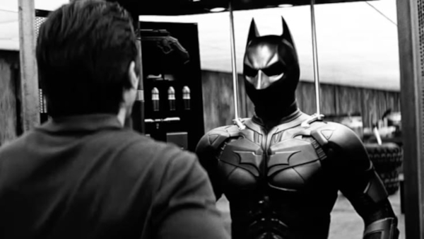

Batman é um dos super-heróis mais famosos da DC Comics e o principal protetor da cidade de Gotham. Seu verdadeiro nome é Bruce Wayne, um empresário bilionário que presenciou o assassinato de seus pais quando ainda era criança. Esse acontecimento marcou profundamente sua vida e despertou o desejo de combater o crime.
Após anos de treinamento físico, intelectual e estratégico ao redor do mundo, Bruce retornou a Gotham decidido a enfrentar criminosos utilizando uma identidade secreta. Inspirado pelo medo que os morcegos causam, criou o símbolo do Batman e passou a patrulhar a cidade durante a noite.
Diferentemente da maioria dos heróis, Batman não possui superpoderes. Sua força está em sua inteligência, disciplina, habilidades de combate e nos diversos equipamentos tecnológicos que desenvolve. Ao longo dos anos tornou-se um dos maiores detetives do mundo e um dos principais membros da Liga da Justiça.
Mesmo enfrentando inimigos extremamente perigosos, Batman mantém um rígido código moral, recusando-se a tirar a vida de seus adversários. Sua determinação e coragem fizeram dele um dos maiores heróis da cultura pop.
Batman domina dezenas de estilos de luta, como judô, caratê, kung fu, jiu-jítsu e boxe. Seu treinamento intenso permite enfrentar vários adversários ao mesmo tempo utilizando golpes rápidos, precisos e técnicas de imobilização.
Bruce Wayne possui um intelecto extraordinário. Ele analisa situações rapidamente, cria estratégias complexas e encontra soluções para problemas que poucos seriam capazes de resolver.
Conhecido como o Maior Detetive do Mundo do Mundo, Batman é especialista em coletar pistas, solucionar crimes e reconstruir acontecimentos através de pequenas evidências encontradas nas cenas de investigação.
Batman sempre estuda seus adversários antes de enfrentá-los. Ele prepara planos de contingência, prevê diferentes cenários e desenvolve estratégias para derrotar até mesmo inimigos muito mais fortes do que ele.
Graças ao seu treinamento, Batman consegue mover-se silenciosamente, infiltrando-se em bases inimigas sem ser percebido. Muitas vezes seus oponentes nem sequer percebem sua presença até que seja tarde demais
Seus reflexos permitem desviar de tiros, ataques físicos e armadilhas com enorme eficiência. Essa habilidade é resultado de anos de treinamento físico e mental.
Batman mantém seu corpo em excelente forma física. Sua força, velocidade, resistência e agilidade estão entre as maiores de qualquer ser humano sem superpoderes.
Além de atuar sozinho, Batman lidera equipes como a Liga da Justiça e a Batfamília. Sua capacidade de tomar decisões sob pressão faz dele um excelente comandante.
Bruce Wayne possui amplo conhecimento em engenharia, informática, química, medicina e diversas áreas da ciência, utilizando esse conhecimento para desenvolver equipamentos e solucionar problemas.
Mesmo diante de situações extremamente difíceis, Batman continua lutando sem desistir. Sua determinação é considerada uma de suas maiores qualidades.
O uniforme de Batman é produzido com materiais resistentes que oferecem proteção contra impactos, cortes e disparos de armas de pequeno calibre, sem comprometer sua mobilidade.
Sua capa possui um tecido especial que permite planar entre edifícios e reduzir a velocidade durante quedas, facilitando deslocamentos rápidos por Gotham.
A máscara contém diversos sensores eletrônicos que auxiliam na visão noturna, comunicação, análise do ambiente e identificação de ameaças.
Um dos equipamentos mais importantes de Batman, o cinto armazena diversos dispositivos utilizados durante suas missões, permitindo acesso rápido às ferramentas necessárias.
São armas de arremesso inspiradas em morcegos. Batman utiliza os Batarangs para desarmar inimigos, cortar cordas, acionar mecanismos ou distrair adversários.
Esse equipamento dispara um cabo de aço com um gancho na extremidade, permitindo que Batman alcance rapidamente telhados, prédios altos e locais de difícil acesso.
Ao serem acionadas, criam uma densa cortina de fumaça que dificulta a visão dos inimigos, permitindo fugas estratégicas ou ataques surpresa.
O Batmóvel é um veículo altamente tecnológico equipado com blindagem reforçada, armamentos, sistemas de navegação e grande velocidade para perseguições.
A aeronave utilizada por Batman possibilita deslocamentos rápidos, reconhecimento aéreo e apoio durante operações de combate em larga escala.
Na Batcaverna, Batman utiliza um supercomputador capaz de analisar dados, acessar bancos de informações, monitorar Gotham e auxiliar em investigações complexas.
O Batman possui um plano para derrotar cada membro da Liga da Justiça caso algum deles se torne uma ameaça. O Batman é muito preparado!
A combinação entre sua inteligência extraordinária, preparo físico, habilidades de combate e equipamentos tecnológicos transforma Batman em um dos maiores heróis da DC Comics. Mesmo sem possuir superpoderes, sua determinação, disciplina e senso de justiça fazem dele um símbolo de coragem e inspiração, sendo reconhecido como um dos personagens mais importantes e influentes da história dos quadrinhos.